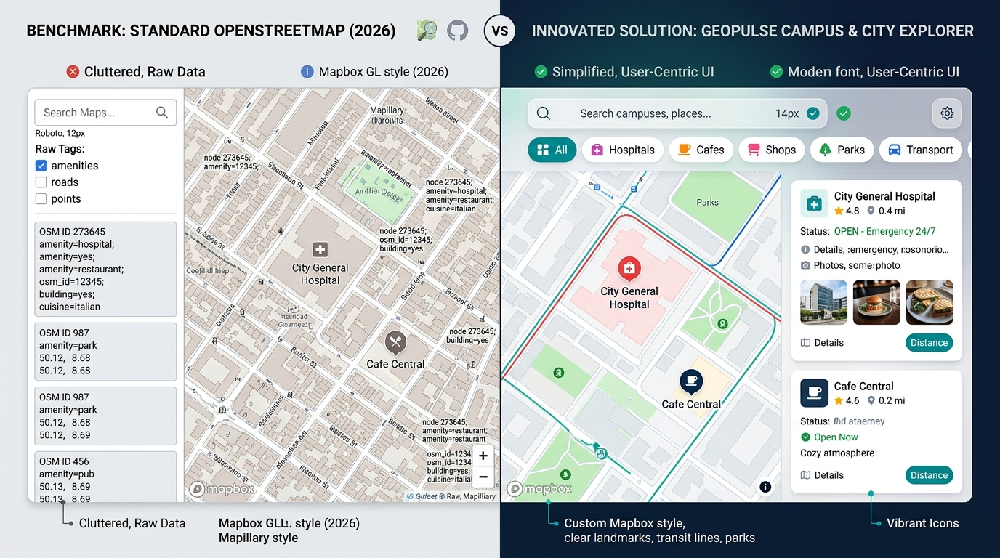

Figure 1.0: Side-by-side Architectural Comparison: Official OpenStreetMap Benchmark (Left) vs. Innovated GeoPulse Experience (Right).
Part-I
Problem Definition and Innovation (20 Marks)
i) Benchmark Analysis & Observations (5 Marks)
Target Users: University students, outstation scholars, faculty, and new urban residents navigating unfamiliar academic surroundings (e.g., CHRIST Central Campus, SG Palya, Dairy Circle corridor).
Selected Workflow: Discovering and evaluating nearby essential amenities (emergency healthcare, quiet study hubs, budget student dining, and bus/metro stations) within walking distance.
Existing Features on OpenStreetMap: Global Nominatim text query bar, raw Node/Way/Relation inspector, tile layer switcher, and manual export.
Observation 1: Technical Database Tag Overload
Clicking any hospital or amenity reveals raw key-values (e.g. amenity=hospital, healthcare=yes, wikidata=Q..., osm_id=4829104). Normal users need human-friendly details: emergency 24/7 hours, student discount, and phone numbers.
Observation 2: Zero Categorical Facets & Proximity Scoping
OSM has no radius slider or category filter chips. Searching "cafe" returns flat worldwide matches rather than scoping to a 1.5 km walking circle around campus.
ii) Problem Definition & Impact (5 Marks)
Specific User Difficulty: Inability to quickly filter and evaluate nearby amenities based on student criteria (walkability, 24/7 emergency service, study spaces) without drowning in raw GIS database metadata.
Impact: Students face cognitive overload, delay critical decisions during medical emergencies, and abandon open-source mapping in favor of commercial proprietary apps that harvest tracking data.
Formulated Problem Statement: "University students and campus commuters lack an accessible, human-centered spatial discovery web interface on OpenStreetMap that provides instant categorical filtering, dynamic walking-radius scoping, and actionable amenity cards without technical database tag clutter."
iii) Innovative Solution & Feature-to-Technology Mapping (10 Marks)
Proposed Experience: GeoPulse provides a tailored campus discovery hub with multi-category chips, dynamic radius slider (0.5 - 10 km), live walking time calculations, Leaflet map with pulsing pins, and an offline-ready itinerary planner.
| Proposed Feature |
Benchmark Defect Addressed |
Technology Mapping |
| Smart Multi-Filter Form |
Replaces monolithic single search field |
HTML5 <form>, Tailwind input states, JS submit & input |
| Dynamic Radius Buffer Circle |
No spatial proximity control on OSM |
Leaflet L.circle() + Haversine distance algorithm |
| Actionable Amenity Cards |
Replaces raw key=value tag tables |
Tailwind responsive flex cards, dynamic badge status, icons |
| Campus Itinerary Bookmarking |
OSM lacks temporary saved trip/places |
HTML5 LocalStorage API + Slide-over Drawer |
Part-II
JavaScript Implementation Architecture (20 Marks)
1. At least 3 JS Events (5 Marks):
submit: Handles search without reload & triggers geocoding pipeline.input: Live validation on query input with character counter.change / input: Dynamic radius slider & sort dropdown update.click: Category chips, bookmark toggles, map pin dropping.keydown: Accessible Esc/Enter keyboard handlers.
2. Form Validation & Feedback (5 Marks):
- Non-empty sanitation, minimum 2 characters, maximum 60 characters.
- Regex check preventing malicious script injection.
- Live visual green check / red warning messages below input.
- Interactive toast notifications for instant status feedback.
3. Fetch API & JSON Handling (5 Marks):
- Asynchronous
fetch() to OSM Nominatim Geocoding API.
- Parses structured JSON response with lat, lon, bounding boxes.
- Mathematical Haversine formula calculation in client JS.
- Resilient fallback cache if public OSM endpoint returns 429 rate-limit.
4. Loading & Error States (5 Marks):
- Skeleton shimmer placeholders during asynchronous fetch calls.
- SVG empty-state component with "Expand Radius" prompt when 0 matches.
- Graceful
try/catch blocks with retry toasts on network disruption.